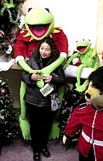
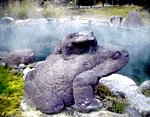
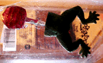
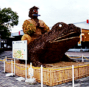

|
 カエルに抱かれて幸福な聖夜に！巨大カーミット出現！【長崎発=カーミット大好き様】長崎にでかけたときのことです。大浦天主堂の下のおみやげ物やさんに向かう通路に、巨大カーミットが座っていました。身長２メートルくらいありそうで、値段は５万円でした。試しに、腕に抱かれたら、とっても幸福な気持ちになります。よほど買って帰ろうかと思ったのですが、友達４人で来ていたので、カーミット連れたままで長崎観光するのも大変なので、思いとどまりました。カーミットのメーカーの方は、今度は自力で動くカーミット作って下さい！お願いします！独り暮らしの人だったら、カーミットとともに過ごせば、もう、うるさい人間の男は不要です。
【全国かえる奉賛会】各地で、カエルグッズの巨大化が報告されているが、このカーミットは、半端ではないサイズなので、抱き枕の代わりにもなるし、車の助手席に乗せていれば、彼氏代わりにもなる。聖夜を一人で過ごす人は、男女を問わず５万円カーミットと過ごそう！
 別府地獄に石像親子ガマ！子ガエルは横座り！【大分発=すみ様】別府温泉にでかけたとき、血の池地獄などがある、別府温泉地獄巡りのところで、大きな石でできたガマの親子がいました。背中のカエルが横に座っているのが珍しい。お湯が熱いので、横を向いているのでしょうか。地獄にいったら、カエルに助けてもらおうっと。モローストラップ完売！【福岡発=モローの娘・弟子・りょうこ同志記者】けろテン市場で売り出した、モロー君の携帯ストラップのクリスマスバージョンは完売しました。みなさん、ありがとう。あまりの人気に、ゲットできなかった人からのリクエストに答えて、初売り用に追加発売を検討しています。１月５日くらいにカエル新聞を注意して見ておきましょう！モロー葉書は販売続行！【東京発=モロー寺井同志記者】けろテン市場で販売中の２０００年記念カードは、年間通じて使いたい人のために、締め切りを延長しました。１枚１００円、１０枚以上購入で一割り引きです。どっきり！カエル下半身キャンデー！ 【東京発=けろぱ同志記者】出張の折りに発見したアメリカ土産をお届けします。【全国かえる奉賛会】ありがとう！受領したカエルは、可愛いバレリーナカエルが主役だったのだが、主役以上に気になったのが、このキャンデーだ。うえはペロペロキャンデーになっているのだが、下は、なんとリアルなカエルの下半身だ。これって、上のキャンデーを食べて、下半身をそこらへんに置いておくと、きっと本物と勘違いして卒倒する人もでるかもしれないくらい、リアルなのである。どーゆー趣味しとんぢゃあ、こんなキャンデー作ったアメリカの人は？？
しかし、この下半身だけが存在するキャンデーというのも、妙ではある。きっと、カエルの頭部があって、下半身がキャンデーという裏番があるのではないだろうか。Yuckersという商標だった。さっそく会社に持って行き、誰かを卒倒させてみようっと。
五右衛門ガマ初詣を計画！カエラーよ熊本に集え！ 【全国かえる奉賛会】九州自動車道の熊本北インターのパーキングエリアのトイレのそばに、出現した超巨大なガマガエルを見学するため、げこげこ大王一行は、新年２日に、車で、見物にでかけることにした。九州自動車道を南下していったん熊本北インターで下車し、登りに入りなおして、パーキングエリアに立ち寄ることにしている。目標到達時刻は午後２時を予定しています。全国の同志よ、車を乗りついで、九州自動車道熊本北インターで合流しよう。詳しくは、本年最終のカエル新聞更新を待て！
投稿採用者に武功カエル徽章を授与！ |
かえる古新聞過去に取り上げた記事を見出し付きで一覧したい人は、ここをクリック◆創刊号を見る◆先週号を見る◆話題の号を見る◆かえる新聞の昔を読む
|
私も入っています。。全国かえる奉賛会
大王様に会うには、このバナーをクリック。ずっと奥に写真館があるぞ。全国かえる奉賛会に入会するには、自分のホームページのどこかに、下の部分を追加するとバナーがリンク付きで表示されるぞ。どんどん入会しましょー |


|